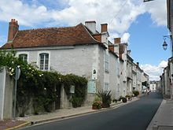

|  |
Infancia y adolescenciaDurante la Edad Moderna era también conocido por su nombre latino Renatus Cartesius. Descartes nació el 31 de marzo de 1596 en la Turena, en La Haye en Touraine, hoy en día llamada Descartes en su honor, después de que su madre abandonara la ciudad de Rennes, donde se había declarado una epidemia de peste bubónica. Pertenecía a una familia de baja nobleza; su padre fue Joachim Descartes, consejero en el Parlamento de Bretaña. Era el tercero de los descendientes del matrimonio entre Joachim Descartes, parlamentario de Rennes, y Jeanne Brochard, por lo que, por vía materna, era nieto del alcalde de Nantes. Después de la temprana desaparición de su madre, Jeanne Brochard, a pocos meses después de su nacimiento, quedó al cuidado y crianza de su abuela, su padre y su nodriza. Fue criado por la atención de una nodriza, a quien permanecerá ligado toda su vida, en casa de su abuela materna. Su madre muere el 13 de mayo de 1597, a los trece meses siguientes de haber alumbrado a René y pocos días, luego del nacimiento de un niño que no sobrevive. Su padre comenzó a llamarle su «pequeño filósofo» porque el pequeño René se pasaba el día planteando preguntas. Con once años entra en el Collège Henri IV de La Flèche, un centro de enseñanza jesuita en el que impartía clase el padre François Fournet —doctor en filosofía por la Universidad de Douai— y el padre Jean François (matemático) —que le enseñará matemáticas durante un año— en el que permanecerá hasta 1614. Estaba eximido de acudir a clase por la mañana debido a su débil salud y era muy valorado por los educadores a causa de sus precoces dotes intelectuales. Aprendió física y filosofía escolástica, y mostró un notable interés por las matemáticas; no obstante, no cesará de repetir en su Discurso del método que en su opinión este sistema educativo no era bueno para un adecuado desarrollo de la razón. De este periodo no conservamos más que una carta de dudosa autenticidad —puede ser de uno de sus hermanos— que en teoría Descartes escribió a su abuela. EducaciónLa educación que recibió en La Flèche hasta los dieciséis años de edad (1604-1612) le proporcionó, durante los cinco primeros años de cursos, una sólida introducción a la cultura clásica, habiendo aprendido latín y griego en la lectura de autores como Cicerón, Horacio y Virgilio, por un lado, y Homero, Píndaro y Platón, por el otro. El resto de la enseñanza estaba basada principalmente en textos filosóficos de Aristóteles (Órganon, Metafísica, Ética a Nicómaco), acompañados por comentarios de jesuitas (Suárez, Fonseca, Toledo, quizá Vitoria) y otros autores españoles (Cayetano). Conviene destacar que Aristóteles era entonces el autor de referencia para el estudio, tanto de la física, como de la biología. El plan de estudios incluía también una introducción a las matemáticas (Clavius), tanto puras como aplicadas: astronomía, música, arquitectura. Siguiendo una extendida práctica medieval y clásica, en esta escuela los estudiantes se ejercitaban constantemente en la discusión (Cfr. Gaukroger, quien toma en cuenta la Ratio studiorum: el plan de estudios que aplicaban las instituciones jesuíticas). |